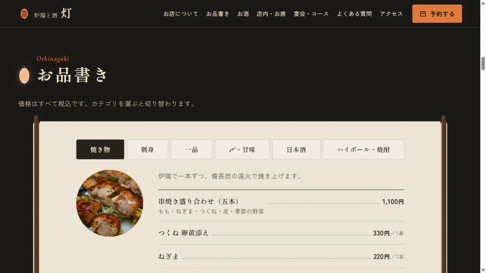
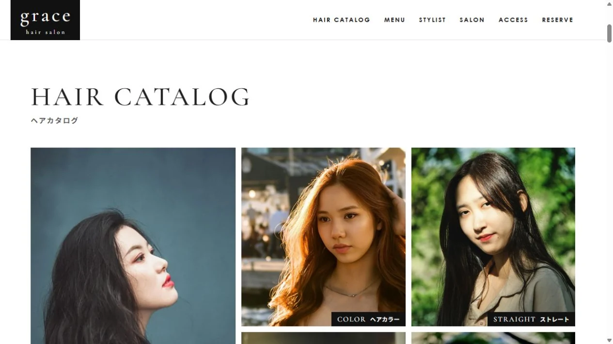
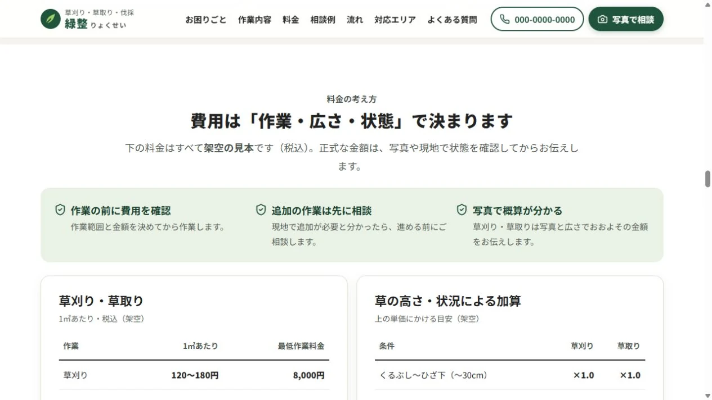
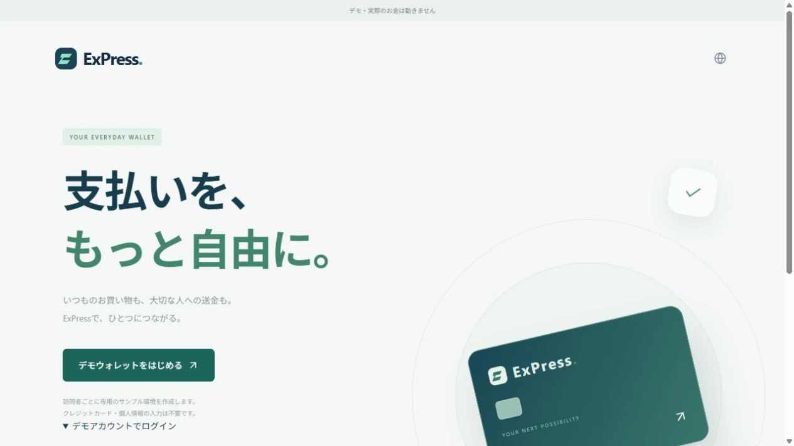
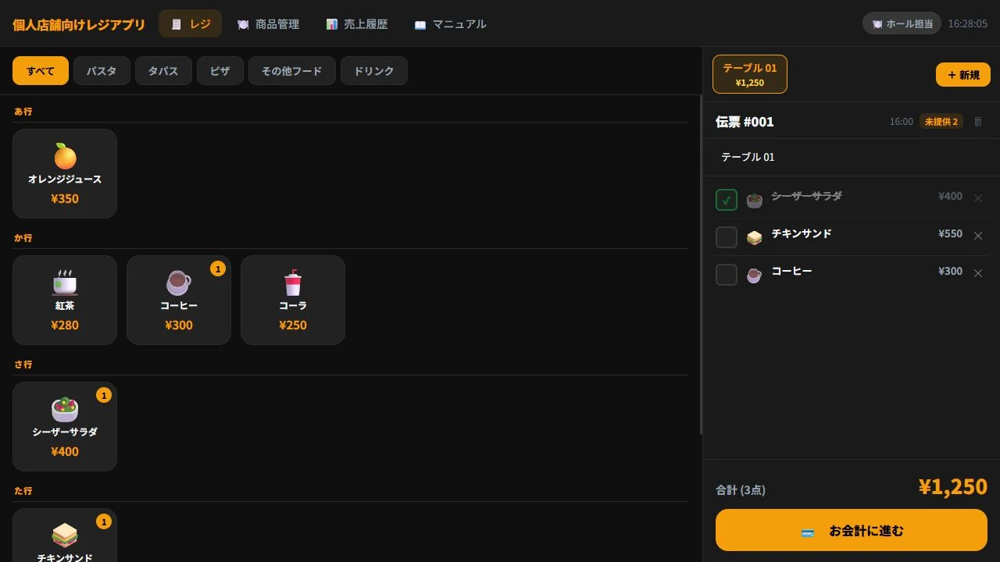

炉端と酒 灯
飲食店 / 自主制作

- 表現と使いやすさ
- お品書き、お席、コース、アクセスを順に紹介。初めて訪れる人が、料理と過ごし方を一緒に想像できる構成です。
- 画面にあるもの
- 料理の種類で切り替えられるお品書きと、お席の紹介を掲載。来店前に知りたい情報から予約案内へ進めます。
もう一つの画面を見る

拡大する ＋伝わる表現。使いやすい仕組み。
Webサイトから業務アプリまで。
アイデアを実際の画面にした、自主制作の記録です。
架空の事業者を想定した自主制作です。
飲食店 / 自主制作

拡大する ＋美容室 / 自主制作

拡大する ＋草刈り・伐採 / 自主制作

拡大する ＋業務や日常の操作を題材にした、自主制作のプロトタイプです。
決済管理 / 自主制作
 拡大する ＋
拡大する ＋
決済申請、入金、返金、加盟店ごとの精算を整理する管理画面。複数の業務を扱う担当者が、次に確認することを見つけやすくする設計です。
状態ごとの表示と業務別のナビゲーションを使い、一覧から詳細へ進める構成にしています。公開デモでは、取引・加盟店・精算・レポートの画面を確認できます。
ウォレット / 自主制作

拡大する ＋利用者向けのウォレットを中心とした、決済の仕組みのプロトタイプ。残高や利用履歴など、日常のお金の動きを画面で整理することをテーマにしています。
利用者が見るウォレットと、店舗・運営が扱う機能を想定して設計。公開サイトには、サンプル環境でウォレットを開始する入口を用意しています。デモの起動には時間がかかったり、接続できない場合があります。
店舗運営 / 自主制作

拡大する ＋注文から会計まで、店舗の仕事を扱うレジアプリ。テーブルごとの状況を共有し、ホールとキッチンが同じ情報を見られることを目指した自主制作です。
掲載画面では、テーブルと注文をまとめて見られる構成を紹介しています。公開サイトの名称は「黒レジ」。現在の公開入口はスタッフログイン画面です。
掲載画面にはサンプルデータを使用しています。決済作品はデモ・試作用のもので、実際の資金の決済や送金を行う商用サービスではありません。